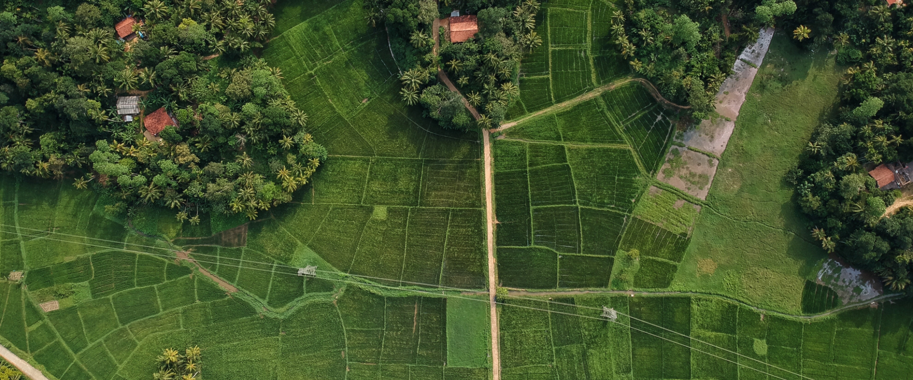
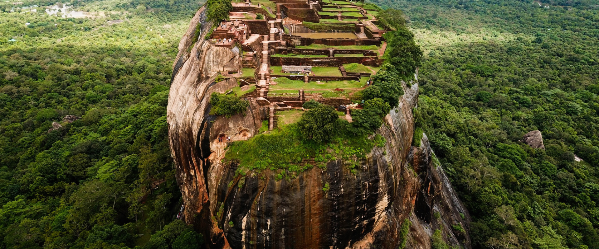
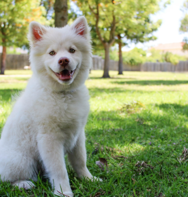
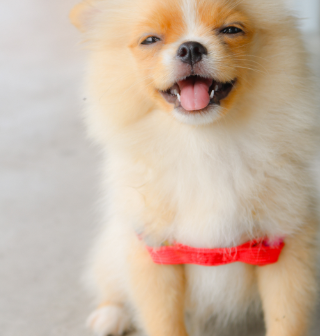

그 소중한 가치를 알기에 우리는 돌아가려고 합니다.
자연으로, 스마트하게

Samhwan is always providing the best price and quality
STRAP THE WORLD TIGHTLY

MUJIN ASSOCIATES
무진어소시에이츠
이전 팝업 보기
다음 팝업 보기
일시정지
반응형으로 보일 배너개수제한
리조트 내 입점된 GS 25 편의점 리뉴얼 공사로 인해 해당 기간 동안 이용이 불가한 점 양해 부탁드립니다
리뉴얼 공사 일시: 2022년 10월 17일(월)~ 2022년 10월 21일 (금)
숙암(宿岩)이라는 지명에는 의미 있는 유래가 있습니다.

옛 맥국(貊國)의 갈왕(羯王,가리왕)이 고된 전쟁을 피하여 정선 이 지역에 머물며 암석 밑에서 하룻밤을 유숙하고

숙면을 취했다 하여 유래된 숙암리(宿岩里). 건강한 공기와 투명한 햇살을 품은 숲길,

 리조트 내 입점된 GS 25 편의점 리뉴얼 공사로 인해 해당 기간 동안
이용이 불가한 점 양해 부탁드립니다
리조트 내 입점된 GS 25 편의점 리뉴얼 공사로 인해 해당 기간 동안
이용이 불가한 점 양해 부탁드립니다
리조트 내 입점된 GS 25 편의점 리뉴얼 공사로 인해 해당 기간 동안
이용이 불가한 점 양해 부탁드립니다
리조트 내 입점된 GS 25 편의점 리뉴얼 공사로 인해 해당 기간 동안
이용이 불가한 점 양해 부탁드립니다